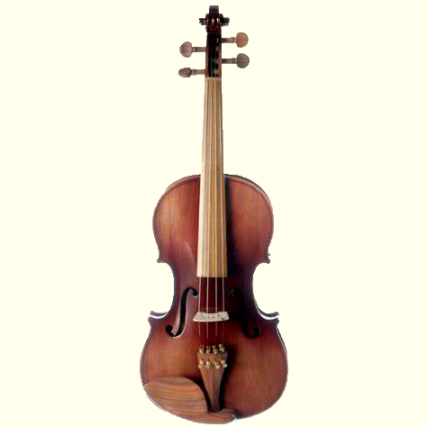

VIOLA DE ARCO
CARACTERSTICAS
A viola d’arco, tal como a conhecemos hoje, evoluiu da viola de braccio, que era tocada apoiada pouco abaixo do ombro, no peito. A palavra viola foi utilizada por muito tempo para identificar qualquer instrumento de arco. Até fins do século XVl, havia mais instrumentos com o nome de viola, como por exemplo: viola de braccio, viola bastarda, viola d´amore, viola da gamba, entre outros. Assim como outros instrumentos de cordas, as violas também podem ser amplificadas eletronicamente. Muitos a utilizam na música popular, jazz, rock, sua utilização mais comum é na música clássica, principalmente em naipes de cordas de orquestras, ou em formações camerísticas como o quarteto de cordas.
TÉCNICA
a viola d’arco é muito semelhante ao violino sendo, no entanto, ligeiramente maior e tendo um som um pouco mais grave e aveludado. A viola d’arco emite sons agudos e graves, mas o registo intermédio é o mais utilizado. A clave utilizada é a clave de Dó e em regiões mais agudas a clave de Sol. .
POSTURA AO TOCAR
Corpo reto e peito para frente. As pernas devem ficar um pouco abertas para estabilizar o equilíbrio do corpo, pois quando o movimento do arco for rápido, o braço direito terá maior facilidade para executar as notas. O peso do corpo deve ficar apoiado nas duas pernas. Quando segurar o violino a posição tem de ser natural, isto é, sentir o violino como se fosse uma parte do corpo.